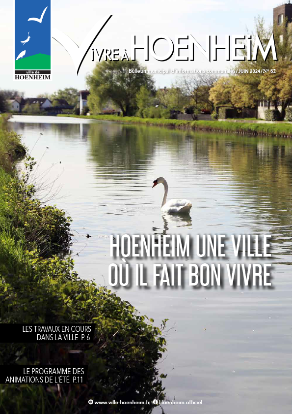

Le magazine Vivre à Hoenheim n°62 de juin 2024, vient de paraître.
Dans cette édition découvrez entre autre les tra aux en cours dans la ville, un projet au multi-accueil, le programme de l’été, les prochaines réunions de quartier, un retour sur les discussions avec STEF, un nouveau spécialiste dans la détections des punaises de lit, l’agenda des prochains évènements, l’inscription au registre canicule, un retour en images sur les événements marquants…
Bonne lecture !